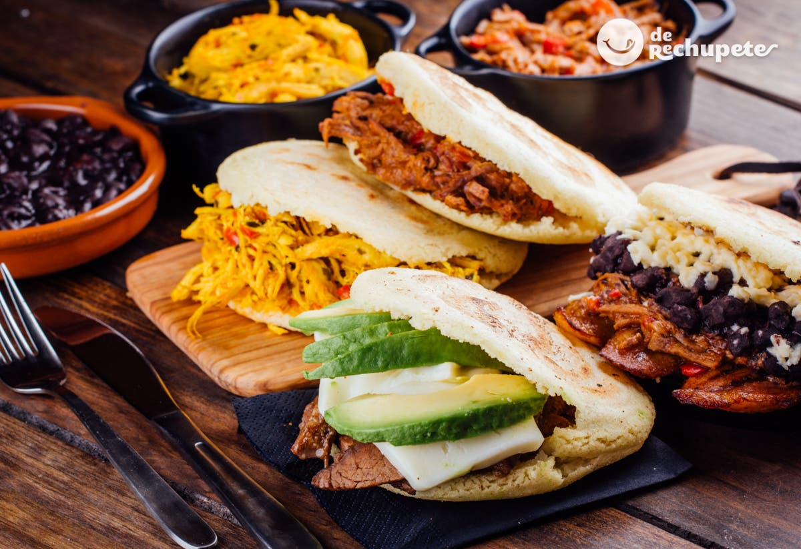

Una Arepita Candelosa

Tanto en Colombia como en Venezuela le llaman "arepa" a una masa redonda hecha con maíz
- 2½ cups lukewarm water
- 1 teaspoon salt
- 2 cups pre-cooked white corn meal (such as P.A.N.®)
- ¼ cup vegetable oil, or as needed
- Content
- Stir water and salt together in a bowl. Gradually stir corn meal into water with your fingers until mixture forms a soft, moist, malleable dough.
- Divide dough into 8 golf ball-size balls and pat each one into a patty about 3/8-inch thick.
- Heat oil in a skillet over medium heat until shimmering. Working in batches, cook corn patties in hot oil until golden brown, 4 to 5 minutes per side. Transfer cooked arepas to a paper towel-lined plate to drain until cool enough to handle.
- Slice halfway through each cake horizontally with a thin serrated knife to form a pita-like pocket.